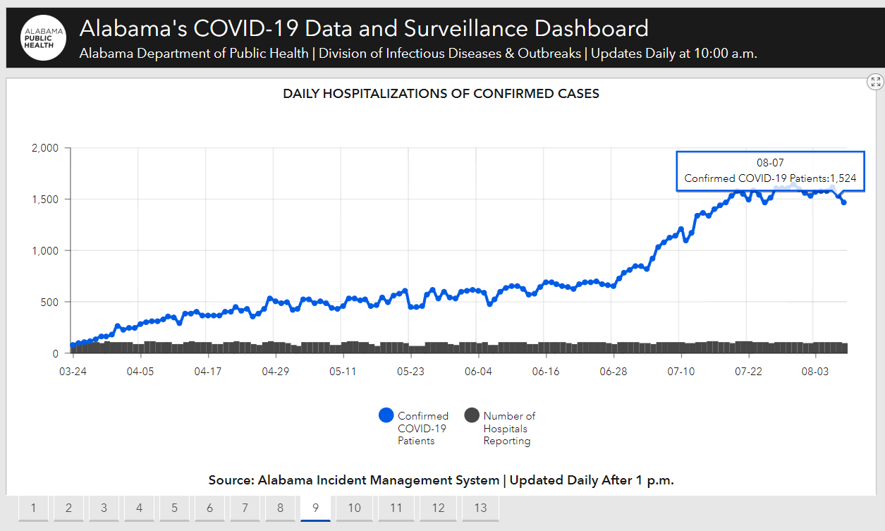
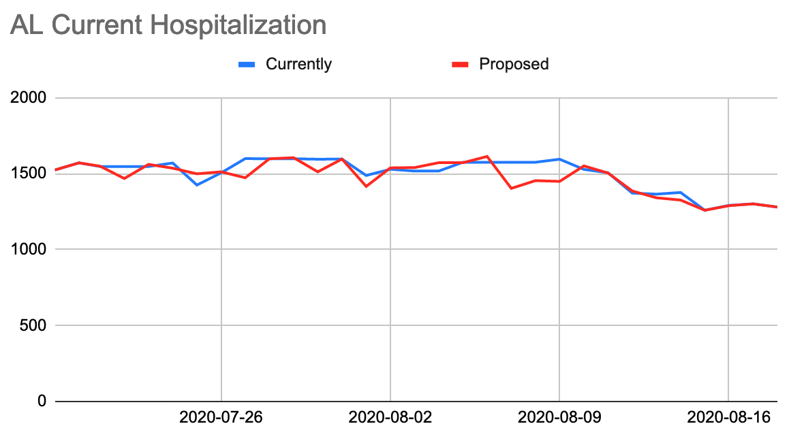

[AL] Backfill current hospitalization counts
State or US: Alabama
Describe the problem Alabama updates its current hospitalization data retroactively. For example: our dataset lists 1575 current COVID-19 patients for 8/5, 8/6, 8/7, and 8/8, but in fact this was only the number on 8/5, according to the state’s dashboard. Other previous dates have also been retroactively updated. We should double-check our current hosp time series against the AL dashboard for the time period since we last did a backfill for this state (7/22). I suggest having morning shifts or backfill shifts check on AL hosp data once a week going forward.
Link to data source https://alpublichealth.maps.arcgis.com/apps/opsdashboard/index.html#/6d2771faa9da4a2786a509d82c8cf0f7 Daily hospitalizations of confirmed cases chart on Tab 9

I’ve pulled in the state’s official data as of this evening. Here’s a chart showing the impact:

It’s good to make sure we have the official data but until we automate this, I don’t think we are able to do it once week.
Analysis spreadsheet, including before/after values: https://docs.google.com/spreadsheets/d/1zhMdtviXvMZiBImDqX5zsiWhBYWGld6PTvg1cMgKIXI/edit